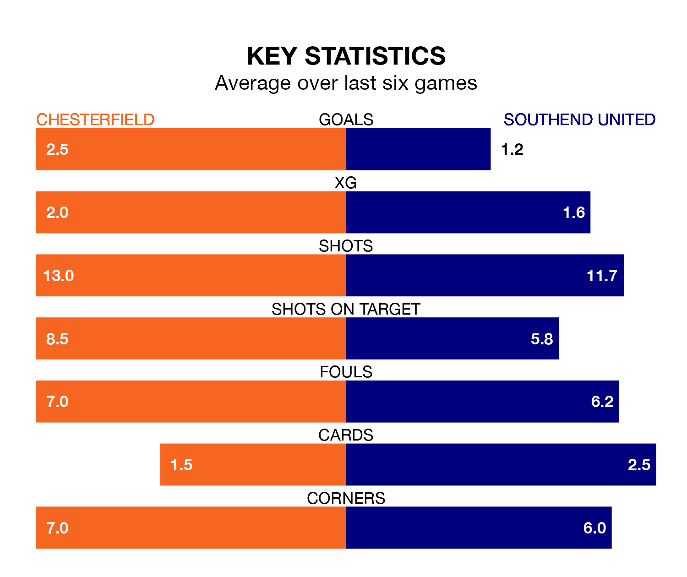

Two of National League's meanest defences go head-to-head at the SMH Group Stadium on Saturday, when Southend United visit Chesterfield.
No teams have conceded fewer goals than Southend to date: the away side have let in just 28 goals in 27 games.
The Spireites have conceded 34 goals in 28 games, giving them the fourth tightest back line so far this season.
Key to the Shrimpers' home form has been Collin Andeng Ndi, who has allowed 1.14 goals past him per 90 minutes, compared to 1.04 for Harry Tyrer in the opposite net.
Chesterfield are top of the table after 28 games, of which they have won 23 and drawn two, earning 71 points.
Southend are five places behind the Spireites in sixth, with 13 wins and five draws putting them on 44 points.
In the last 10 years, Chesterfield and Southend have played each other on 10 occasions. Chesterfield won six of them, Southend three, and they drew once.
On average, the Spireites scored 1.9 goals and the Shrimpers 1.3 in those matches.
Their last meeting was on November 18, when Southend won 2-1 at home.
The home team are in fantastic form in National League, with five wins and one loss from their last six games.
With three wins and three losses over that period, United's form is much worse – they have taken nine points from 18, compared to Chesterfield's 15.
Chesterfield's last match was on Tuesday, a 1-0 win against Woking, with Will Grigg getting the goal for the Spireites.
Southend beat Eastleigh 1-0 last time out, on January 13, with Jack Bridge on the scoresheet.
Updated: 09:07 (UTC), 24/01/24